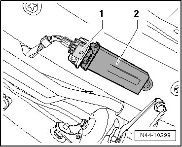

Tire Pressure Monitoring Antenna
Tire Pressure Monitoring Antenna
Removing
The tire pressure monitoring antenna (R207) is bolted to the left sill under the B-pillar.
- Switch ignition off.
- If it is present, remove the tire pressure monitoring antenna (R207) cover cap from the sill.
- Disconnect connector - 1 -.

- Remover the expanding rivet securing the tire pressure monitoring antenna (R207) and remove the tire pressure monitoring antenna (R207) - 2 - from the bracket.
Installing
- Insert the tire pressure monitoring antenna (R207) - 2 - in the bracket and secure it with a new rivet.
- Connect harness connector - 1 -.
- If it is present, install the tire pressure monitoring antenna (R207) cover cap on the sill.